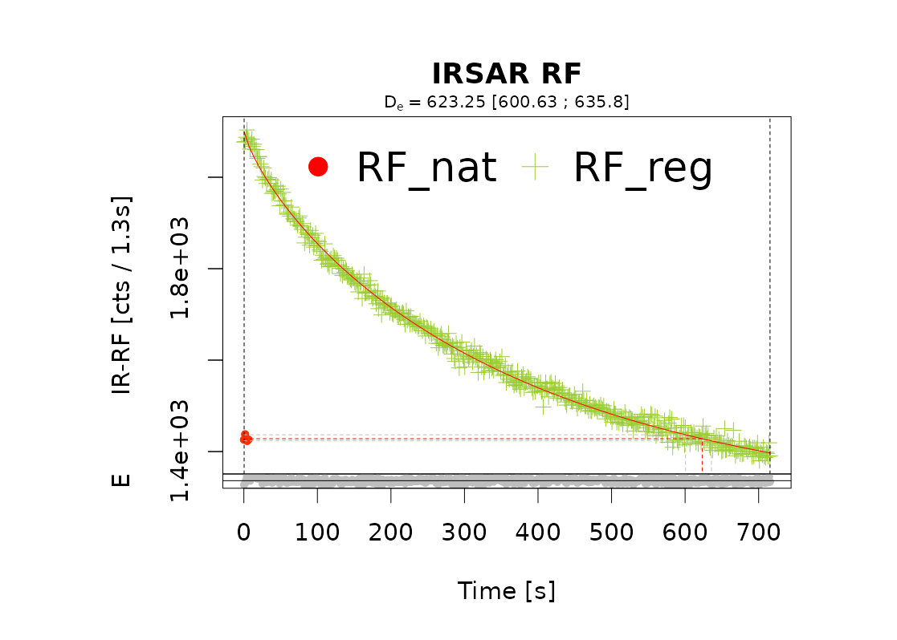
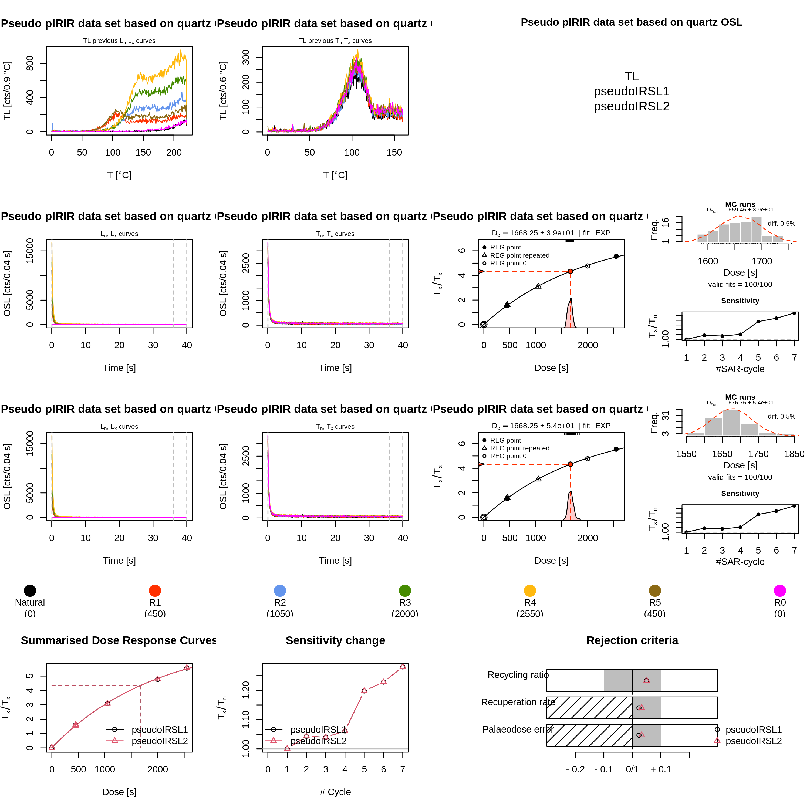
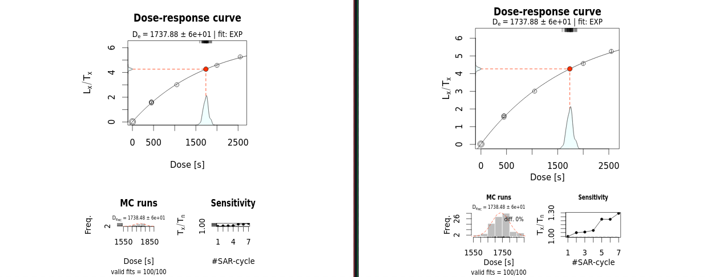

Luminescence Release 1.1.0
Only about 3 months from our previous release, we are happy to announce the release of version 1.1.0 of Luminescence R package. This is a major release, which comes with a few new features and many improvements, especially on the graphical side. In total we addressed 99 issues in 530 commits.
Many of the changes came from our work on the RLumShiny package,
which made us consider in much greater detail some of the Luminescence
functions. We will shortly bring what we think are exciting news on the
RLumShiny side, but for the moment, let’s concentrate on what happened
during this release cycle.
New functions
There are two new functions that have entered the already large family
of Luminescence functions to provide some convenient tools to manipulate
RLum-class objects: remove_SignalBackground() and remove_RLum().
A frequently encountered task involves subtracting curves representing a
background signal from luminescence curves, such as OSL, TL, or RF. The new
remove_SignalBackground()function aims to simplify this operation. By default,
the function assumes that if curves are presented in pairs, the second curve
represents a background signal that needs to be removed from the first curve.
Alternatively, a specific background curve can be provided (it can also be just
the index of a curve in the current object), and this is then subtracted from
the other curves. This provides a user-friendly method to subtract background
signals from various curves in RLum.Analysis objects without having to write
lapply() loops, which require some understanding of how various RLum-class
objects work and interface.
The remove_RLum() function completes the set of methods that can handle and
modify RLum-class objects. It operates on RLum.Analysis objects and allows
to remove unwanted records from datasets. For more insight on how this and
its associated methods could help in your analysis pipelines,
read the detailed article.
Graphical improvements
The work on RLumShiny focused primarily on these functions:
analyse_IRSAR.RF()analyse_portableOSL()calc_AliquotSize()calc_FiniteMixture()calc_Huntley2006()fit_LMCurve()
For each of them we could very quickly test a large number of combinations of supported arguments and graphical parameters, and thus discover and fix several crashes, and cases in which those functions didn’t provide sufficient flexibility in controlling the graphical output.
For example, not all plot elements scaled uniformly when setting a non-default
value for the cex graphical parameter, which controls the magnification level
of text and symbols in a plot. This would result in images like the following,
in which the legend text resulted much bigger than the other elements at
cex = 2.

Many of the above-listed functions revealed to be affected by similar issues.
The complexity of some function interactions, and the at times unpredictable
behaviour of par() (the R function that sets and stores all graphical
parameters), have always made it quite hard to have a reliable and good-looking
output from analyse_pIRIRSequence(). We tackled this in issue 831,
but it was clear from the onset that it would require work in two other
functions (which would still need to continue working well also when used on their
own). This led to a number of small fixes (which actually took quite a lot
of time to develop and test) in particular to plot_DoseResponseCurve().
However, the final outcome is much better than before:

Stability and performance improvements
Besides the number of crashes discovered by using RLumShiny, there are a
few cases where we improved stability and performance of the package.
For example, function calc_Huntley2006() at times could not find a solution
when using the GOK model, and the message “Could not fit simulated model
curve, check suitability of model and parameters” was reported. This was
particularly frustrating, as a fit was always possible with the default EXP
model, and also the GOK model could work on closely related data sets, so
these failures seemed unjustified.
In issue 660 we realised that we needed to be more thorough in how
we initialised the fitting procedure. The previous approach attempted just one
starting point (which was found by the EXP model) and if that failed, we
gave up and reported the message above. We realised that the D0parameter of
the model was the one responsible for the failures, so we settled on trying a
few values for that and use one that allowed the model to be fitted. This
has reduced substantially the number of failures when fitting GOK models.
A sizeable improvement occurred for function fit_DoseResponseCurve(),
where most of the supported models (EXP, EXP+LIN, EXP+EXP and GOK)
have now been implemented in C++. This reduced the required computation time
in half in the benchmarks used, with the actual speed-up growing as the
number of Monte Carlo runs increases.
A small speed-up was obtained for read_XSYG2R() for files where the detector
is not a spectrometer. This came about after noticing that a computation
occurred twice (issue 753).
Other changes
Although package coverage was already very high for the 1.0.1 release (99.3%), and it was not something we actively pursued, we managed to make some further progress in it, and brought it to an astonishing 99.8%. At the moment we are down to just 59 lines out of 27604 that our automated tests do not manage to reach.
Talking about testing, our testsuite contains now 3088 tests, which is a nice improvement (we were at 2897 tests for 1.0.0 and 2935 for 1.0.1). These are run each time a new commit is pushed to the repository. In this release we have finally added a good number of graphical snapshot tests, powered by the vdiffr package. Overall, we now have 23 functions with a graphical snapshot, that is an SVG version of the plot that is stored alongside the usual tests.

When a new change is being prepared, we get warned if the stored snapshot (above left) differs from the current graphical output (above right). This allows us to see quickly the impact the proposed changes, which is especially helpful to make sure that we don’t commit changes without noticing unintended modifications.
Upcoming work
As already anticipated above, we’ll soon bring about a new RLumShiny release, and that’s where our focus will move to in the short term.
As always, bug reports are very welcome, in particular if you spot regression or performance problems. And if you’d like to contribute new functionalities or bug fixes, check out our guidelines for contributors.